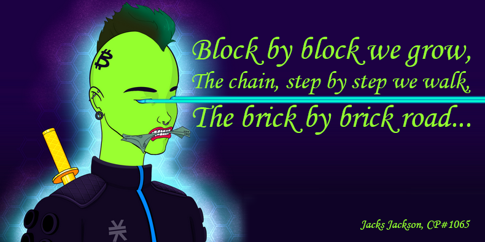

A collection of non-fungible tokens stored on the Bitcoin blockchain.
Haikudos To You is a tribute to Bitcoin builders and Bitcoin communities.
It is a collection of ordinal inscriptions, NFT's on Bitcoin; a 128 piece collection of haikus blending traditional form with modern, technology-focused themes. These concise poems reflect on digital culture, cryptocurrency, and societal shifts, offering moments of contemplation and critique. The straightforward yet evocative language captures themes of love, loss, hope, and disillusionment, distilling the complexity of modern life into just three lines. An accessible and thought-provoking collection that serves as a poetic reflection on the intersection of technology, finance, and humanity in the digital age.

I (werner.btc) started this series in 2021, not knowing it would eventually become a collection of inscriptions on the Bitcoin blockchain. I see myself as a manic poet; sometimes thoughts just have to flow out, whether onto paper, a text file, or an image crafted in Photoshop. Over the past four years, as I delved deep into Bitcoin and its Layers, I penned lines sporadically. I shared a few on social media, often masking my voice by attributing them to one of my avatars to ease the anxiety of putting my thoughts out there. Most of my work remains unpublished because I write primarily for myself. Yet, creating this series and building this site felt essential—a space where anyone can engage with these poems and provide their own avatar. Who do you imagine voicing these words? Who do you envision speaking these verses? A loved one, someone nearby, a friend, or maybe even someone you find challenging?
All the (short) inscription numbers start with 7555, followed by four more digits. Think of those as Roman years. Imagine the poem written in that year. Some were written in the past (75551974), some are written centuries from now (75552422), some of the numbers are easy to remember (75552555), even though they are eight digits long. The poems are inscribed on block 9 sats because Tycho said those are cool and I agree; block 9 sats have been around since the first Bitcoin transaction, mined by Satoshi Nakamoto, and they are vintage (just like the haiku style). These 128 inscriptions are also the parents to a single child inscription, perhaps the first child with 128 parents! It's another way to track provenance and related future work (expect some grandchildren).
One more thing: I used these poems to make songs, in these songs every verse and chorus consists of one or more of these haiku's. These songs will be released soon and a limited number will be available as NFT's. I will share more about that here when it is ready.